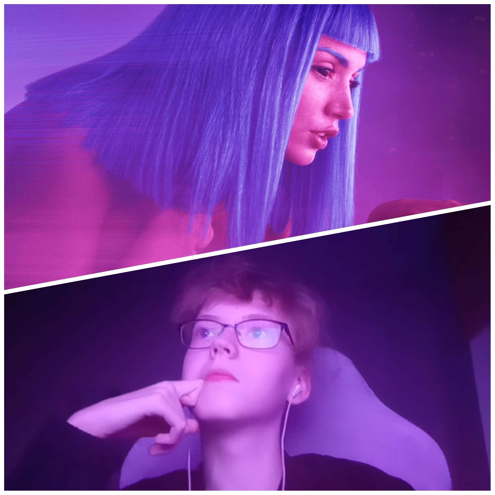

Группа И-12
Группа И-12 учащиеся колледжа педагогического образования и права по направлению информационные системы и программирование. Мы группа готовящаяся встать на путь прогрпамистов и стать опорой будующего информационного мира. В настоящее время принимаем активное участие в жизни колледжа, особенно на мероприятиях связанных с научной, информационной деятельностью и спортом.
Опорой нашей группы являются 7 человек взявшихся
вести группу за собой:
Брюханова Мария и её зам Белоногова Алиса это главные помощницы руководителя группы, они занимаются ведением журнала и организацией порядка в повседневной жизни колледжа
Маинды Шойгу занимается запечатлением всех самых ярких событий в жизни группы и не забывает про поднимающие настроение видео нарезки.
Полинок Марина и её заместитель Черыков Егор. Из за секретности данного клуба о нём ничего не известно.
Воронов Матвей(слева) и его заместитель Райхель Вячеслав занимаетются организацией спортивных мероприятий и следят за спортивной активностью группы.
Кондаков Андрей отвечает за организацию научных мероприятий и олимпиад.
